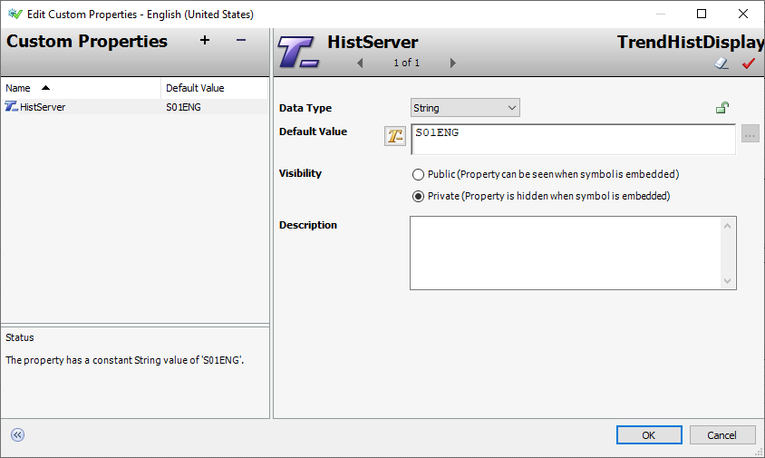
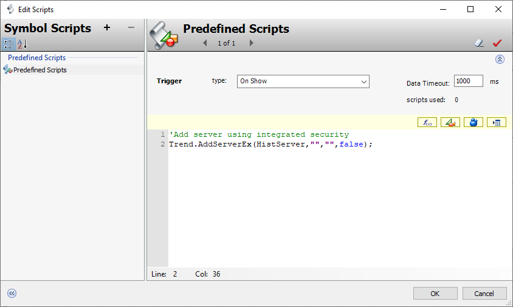
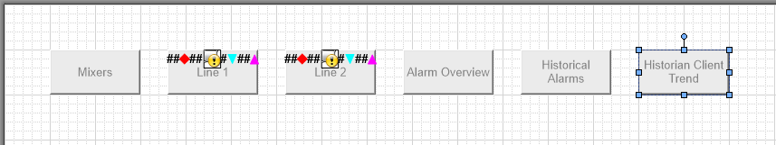
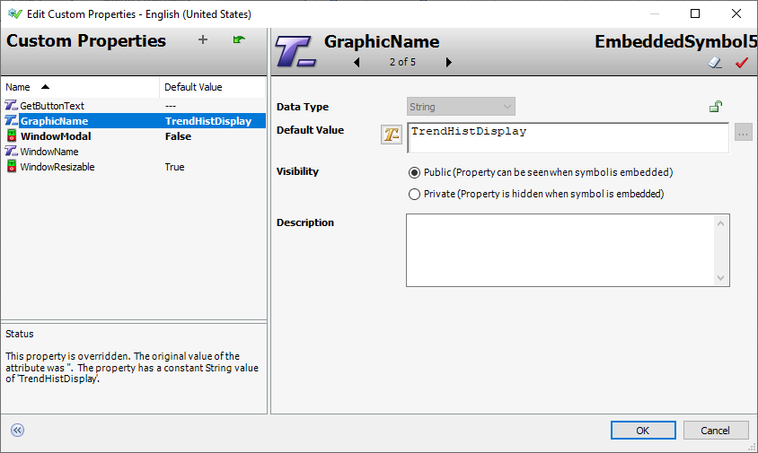
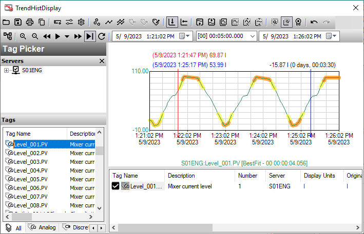
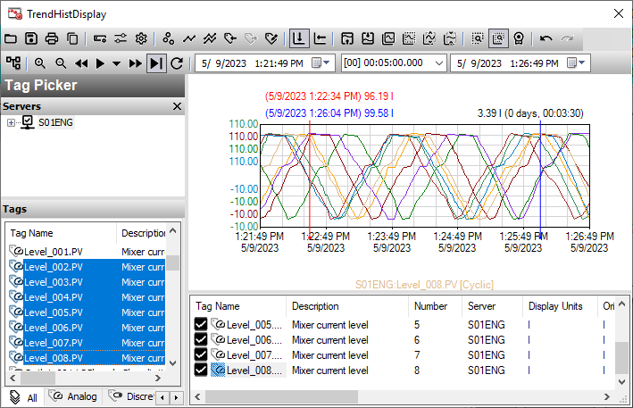
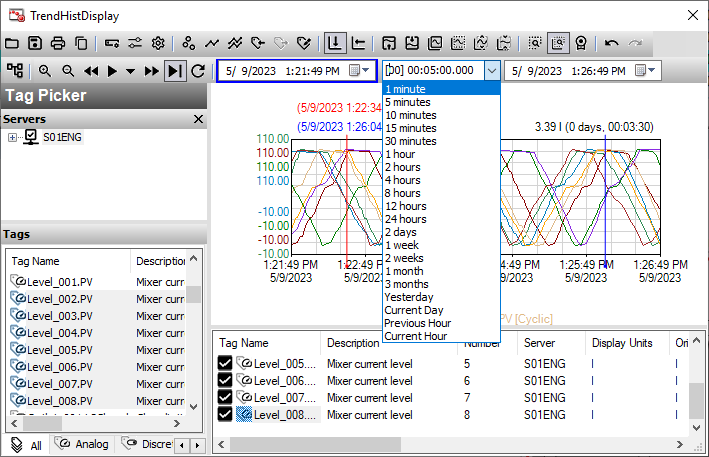
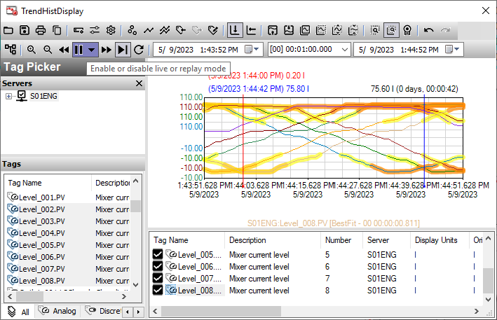

Module 6 — Trend Visualization | Pages 431–438
5.
Add a custom property named HistServer and configure it as follows:
Note:
Your instructor will provide the Historian node name.
6.
Click OK to close Edit Custom Properties.
Data Type:
String
Default Value:
Visibility:
Private

7.
Right-click the canvas and select Scripts.
8.
In Predefined Scripts, in the Trigger type drop-down list, verify On Show is selected.
9.
In the script body, enter the following:
Note:
You may use the applicable script in C:\Training\Lab19 - Building a Historian Client
Trend Display.txt.
'Add a server using integrated security.
Trend.AddServerEx(HistServer,"","",false);
10. Click OK to close Edit Scripts.
11. Save and close and check in the graphic.
Add a Navigation Button for Displaying TrendHistDisplay
Next, you will add a button to the SystemNavigation symbol to display the TrendHistDisplay
graphic.
12. On the Graphics tab, open SystemNavigation for editing.
13. On the canvas, duplicate the Historical Alarms button and place the duplicate to the right of
the original.
14. Use Substitute Strings to change the button text to Historian Client Trend.


15. For the new button, open Edit Custom Properties and change the GraphicName default
value to TrendHistDisplay.
16. Click OK to close Edit Custom Properties.
17. Save and close and check in the graphic.

Test in Runtime
Now, you will view the Historian Client Trend in runtime.
18. In WindowMaker, click Runtime.
19. In the Navigation window, click Historian Client Trend.
After a moment, the trend appears.
20. In Tags, select Level_001.PV and drag it to the chart.
The chart displays Level with alarm limits highlighted where orange represents HiHi and LoLo,
and yellow represents Hi and Lo.

Now, you will add additional tags.
21. In Tags, select the following tags and drag them to the chart.
Note:
To select multiple tags at once, you can press and hold Ctrl or Shift.
Level_002.PV
Level_003.PV
Level_004.PV
Level_005.PV
Level_006.PV
Level_007.PV
Level_008.PV
The comparative display of the overlapping mixer levels demonstrates the time difference for
filling and draining each tank, including latency.

22. Drag other tags to the trend chart and observe the trends.
23. Above the chart, in the middle drop-down list, select 1 minute.
24. Click Enable or disable live or replay mode.
The chart begins scrolling continuously.


25. Close the TrendHistDisplay window.
26. Click Development! to return to WindowMaker.
Review the sections above for the main topics, step-by-step procedures, and important configuration details.
This is part of the InTouch HMI layer, which integrates with Application Server's Galaxy for a complete visualization solution.
Module 6 — Trend Visualization. AVEVA InTouch for System Platform 2023 Training.
Next: Lesson L35 — Security Overview